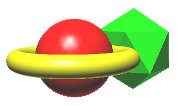

|  |
Rendering is like painting. A second brush-stroke covers the first. So too, a second rendered object obscures the first, even if it's farther from the viewer. |
This scene is impossible to render, because no render order can deal with the sphere inside the torus.